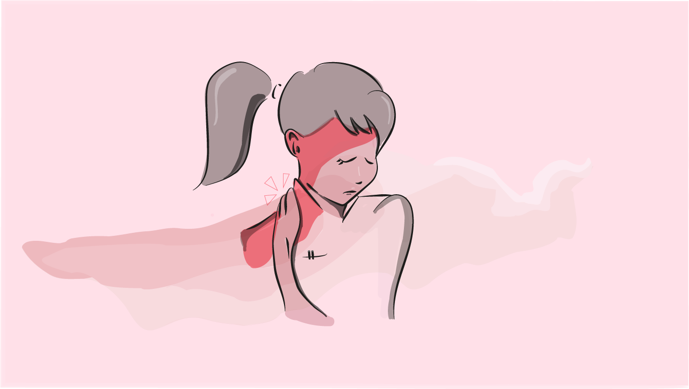

Illustration

Denne illustration er lavet til en artikel for en journaliststuderende, omhandlende smerter ved repetitive bevægelser. Opgaven var at lave en illustration som kunne anvendes som forside til artiklen. Illustrationen skulle illustrere skuldersmerte hos enten en bioanalytiker eller en frisør. Udfordringen var at illustrationen skulle være horisontal, på trods af at det ønskede motiv visuelt var mere vertikal. Denne udfordring forsøgte jeg at løse ved at gøre baggrunden en smule mere interessant, med vandfarven der ligger horisontalt over motivet.